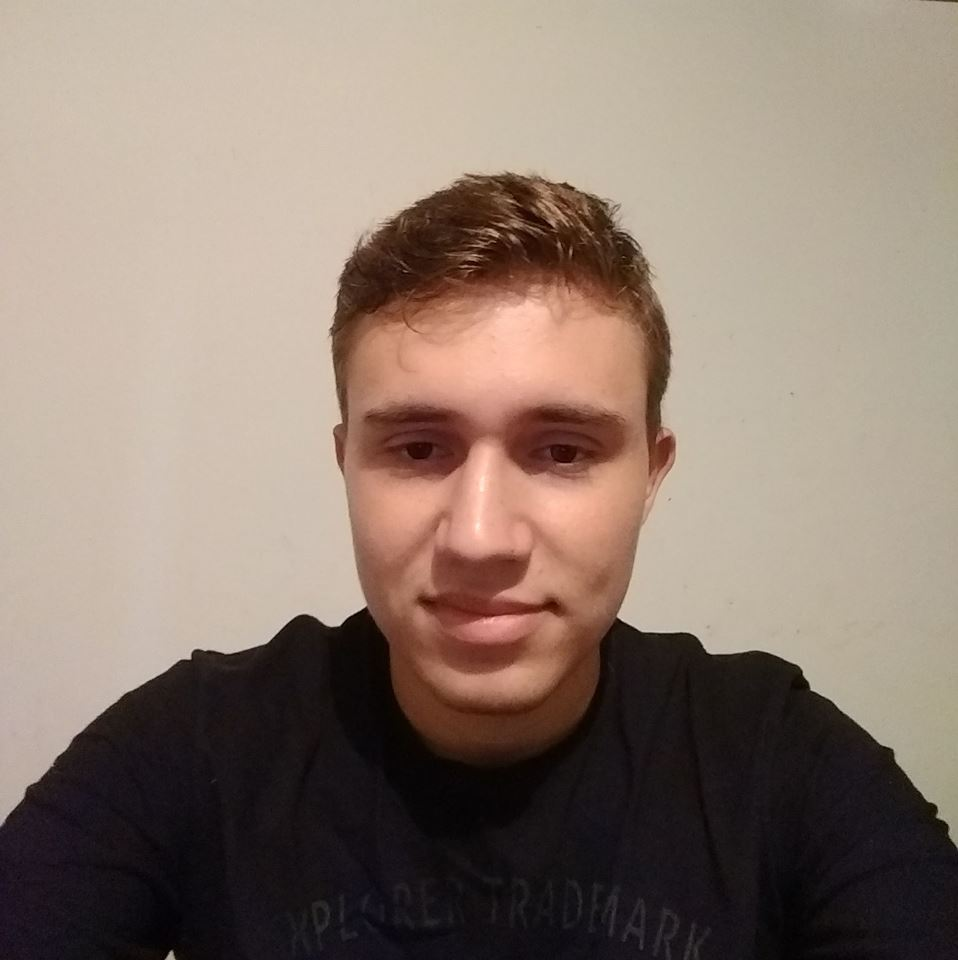

Sobre
Meu nome é Lucas Gabriel Alves Favaro, tenho 18 anos, nasci na cidade de Jales, mas me mudei para Marinópolis ainda criança, onde moro a mais de 14 anos, uma típica pequena e pacata cidade onde todo mundo se conhece. Onde fiz toda minha vida escolar, desde o ensino fundamental até o ensino médio.
Mesmo em todos esses anos nunca quis e nem tive oportunidade de fazer algum curso técnico, coisa que me arrependo muito. Ao finalizar o ensino médio ainda não havia decidido que faculdade fazer, com isso acabei ficando sem fazer nada no primeiro semestre desse ano. Quem me deu a ideia de fazer a Fatec foi minha irmã que já havia feito Agronomia, me inscrevi para o vestibular e consegui passar e hoje estou cursando meu 1º semestre de Sistemas para Internet.
Me interessei por fazer esse curso por que gosto muito da área de TI e pra ser sincero o único que era noturno que me agradou, também acabei querendo me especializar mais na área como era a minha melhor opção foi o que optei, além de ser uma profissão que vem crescendo cada vez mais.
Como muitos jovens da minha idade gosto de games, dentre os vários gêneros que existem meus preferidos são os de modo campanha ou modo história, jogos de FPS em primeira pessoa e jogos de sobrevivência a maioria deles em modo multiplayer, que é a maior tendência dos “gamers” no mundo virtual.